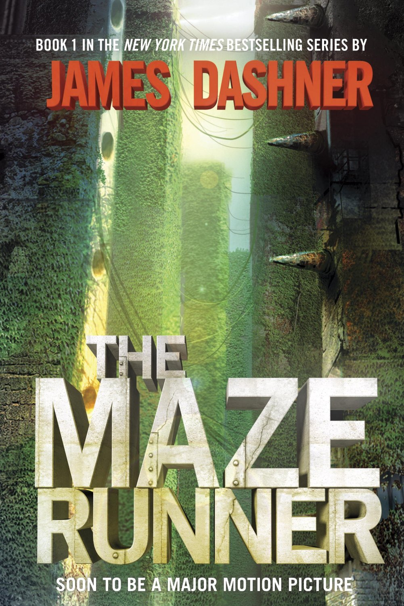

Harry Potter and The Sorcerer's Stone
Written By J.K.Rowling

Hunger Games
Written By Suzzane Collins

The DaVinci Code
Written By Dan Brown
Free

The Great Gatsby is a 1925 novel written by American author F. Scott Fitzgerald that follows a cast of characters living in the fictional town of West Egg on prosperous Long Island in the summer of 1922. The story primarily concerns the young and mysterious millionaire Jay Gatsby and his quixotic passion and obsession for the beautiful former debutante Daisy Buchanan. Considered to be Fitzgerald's magnum opus, The Great Gatsby explores themes of decadence, idealism, resistance to change, social upheaval, and excess, creating a portrait of the Jazz Age or the Roaring Twenties that has been described as a cautionary tale regarding the American Dream. Fitzgerald—inspired by the parties he had attended while visiting Long Island's north shore—began planning the novel in 1923, desiring to produce, in his words, "something new—something extraordinary and beautiful and simple and intricately patterned." Progress was slow, with Fitzgerald completing his first draft following a move to the French Riviera in 1924. His editor, Maxwell Perkins, felt the book was vague and persuaded the author to revise over the next winter. Fitzgerald was repeatedly ambivalent about the book's title and he considered a variety of alternatives, including titles that referenced the Roman character Trimalchio; the title he was last documented to have desired was Under the Red, White, and Blue."


The Diary of a Young Girl (also known as The Diary of Anne Frank) is a book of the writings from the Dutch language diary kept by Anne Frank while she was in hiding for two years with her family during the Nazi occupation of the Netherlands. The family was apprehended in 1944, and Anne Frank died of typhus in the Bergen-Belsen concentration camp. The diary was retrieved by Miep Gies, who gave it to Anne's father, Otto Frank, the family's only known survivor just after the war was over. The diary has since been published in more than 60 languages. First published under the title Het Achterhuis. Dagboekbrieven 14 Juni 1942 – 1 Augustus 1944 (The Annex: Diary Notes 14 June 1942 – 1 August 1944) by Contact Publishing in Amsterdam in 1947, the diary received widespread critical and popular attention on the appearance of its English language translation Anne Frank: The Diary of a Young Girl by Doubleday & Company (United States) and Valentine Mitchell (United Kingdom) in 1952. Its popularity inspired the 1955 play The Diary of Anne Frank by the screenwriters Frances Goodrich and Albert Hackett, which they adapted for the screen for the 1959 movie version. The book is included in several lists of the top books of the 20th century.